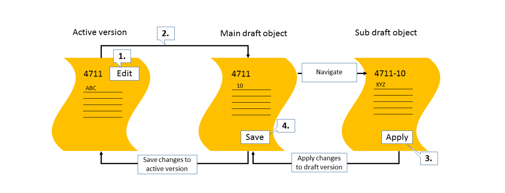

Drafts are used as follows:
To keep unsaved changes when an editing activity is interrupted. This lets users resume editing later.
To prevent data loss if an app terminates unexpectedly
As a locking mechanism to prevent multiple users from editing the same object at the same time, and to inform users about unsaved changes by another user.
When a user starts creating a new business entity or edits an existing one, a draft is created in the background. This enables field validation and dynamic field control (showing additional fields based on user interaction) and provides default values for fields based on recent data entry. A draft can be validated for consistency and completeness at any time. This returns a list of messages.
While the user is modifying a business entity, an indicator shows when a draft is saved implicitly. The user still needs to choose Save to incorporate the changes into an active business document.
The footer bar of a subobject page contains an Apply button in create mode and edit mode. When users choose this button they can conclude their current create or edit activity, apply the changes or entries to the draft, and navigate one step up in the object hierarchy.
When a user edits an object, the system behavior of the Apply button is as follows: 
On an object page, the user chooses Edit.
The system creates a draft version of the object.
The user makes changes to the draft version of the object and navigates to a detail page. When Apply is chosen, the changes are applied to the draft.
When the user chooses Save, the changes are saved to the active version of the object.
If the DiscardAction has been defined in the DraftRoot annotation, the
DiscardAction is called if the user chooses to delete the draft. If the DiscardAction has
not been defined, the Delete call is triggered instead.
Users might enter data that is so inconsistent that the system cannot store it in the draft. For example, characters are entered in a number field, or more characters than the field length allows are entered. If this is the case, the contents of the UI differ from the contents of the draft. Before the draft can be saved by the user, the system displays a message prompting the users to solve these errors. After all errors have been solved, the draft can be saved.
This system behavior is also valid when using the Apply button. When choosing Apply, the system has to make sure that the contents on the UI and the stored contents of the draft are identical. If the errors described above occur, the system displays the same message prompting the user to solve them.
This message lists only errors related to technical inconsistencies, not to logical inconsistencies. For example, if a user enters a business partner that does not exist, this error is not displayed. These types of errors are displayed in a state message when saving the object.